Open the door to an exciting
new career through Cluj Institute
of Technology (CIOT), helping
students change their lives
since 1986. Take control of
your future with hands-on
training in medical,scientific,
technical,informatics and astrophysics
professions that will
leave you inspired and
prepared for the road ahead.
CIOT gallery
With a long history and a great prestige, Cluj Institute of technology is pround to show you our achievements!
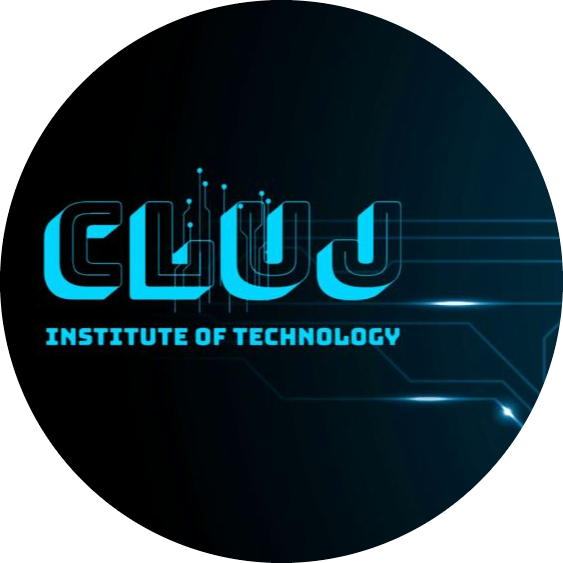
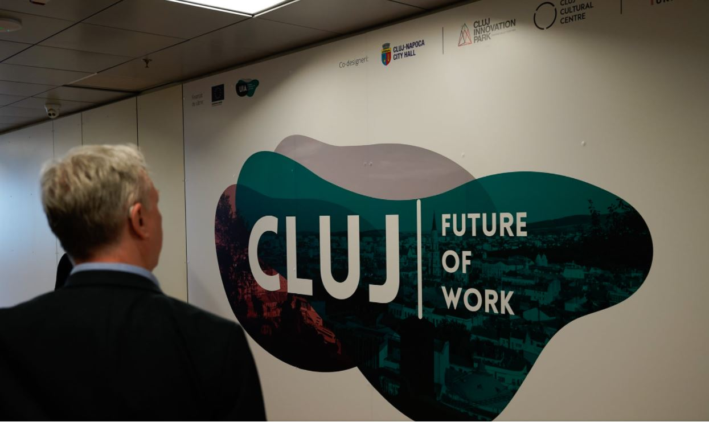
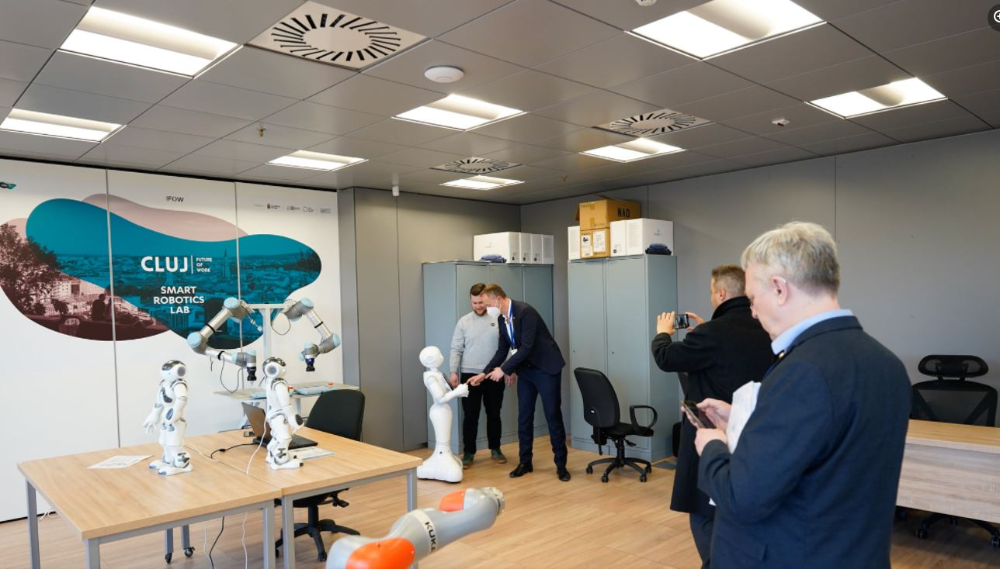
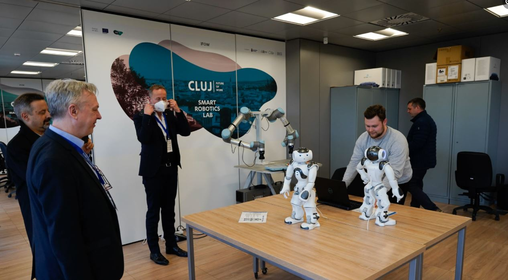
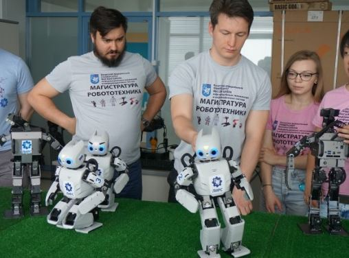
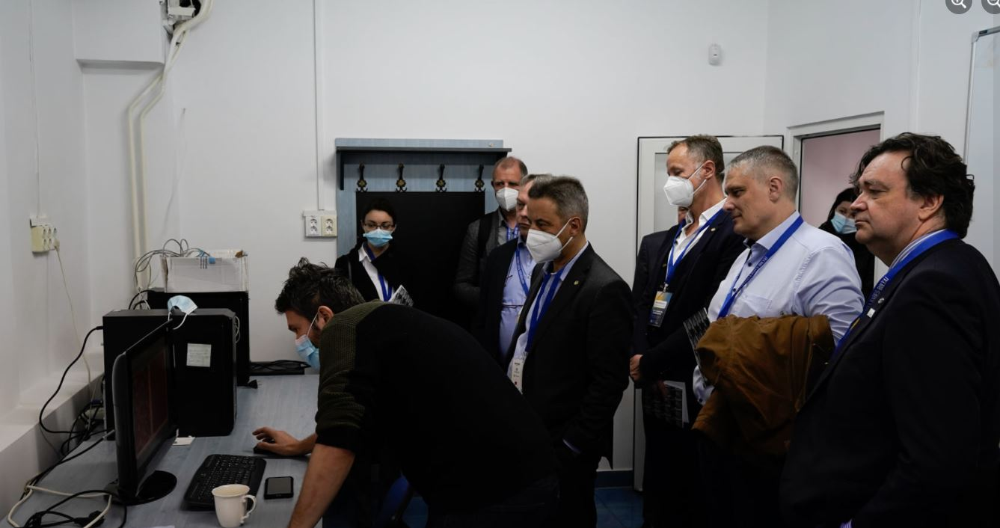
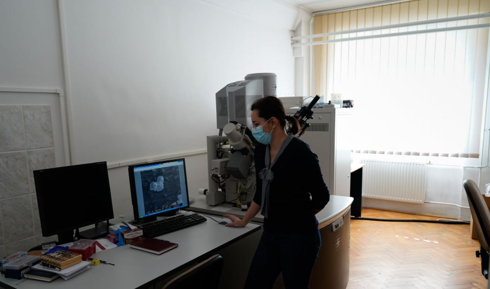
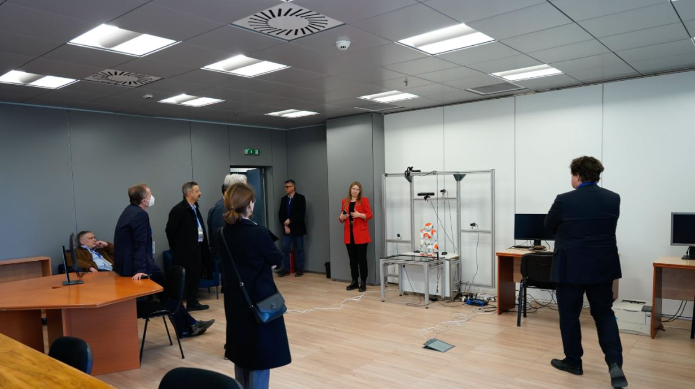
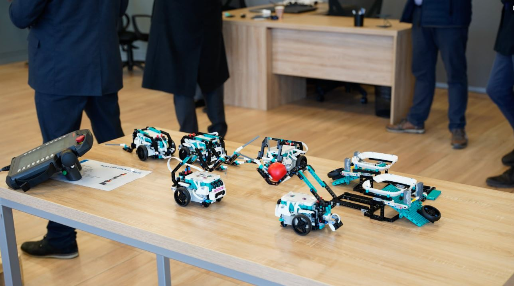
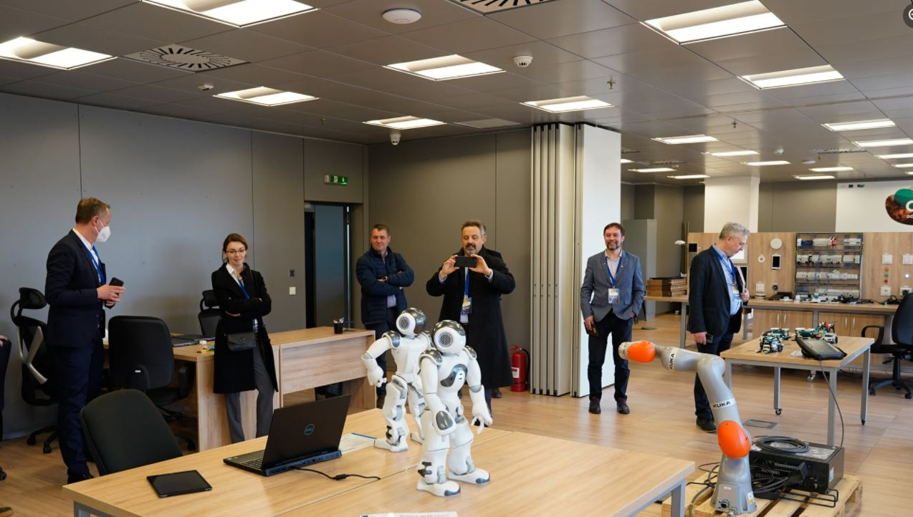
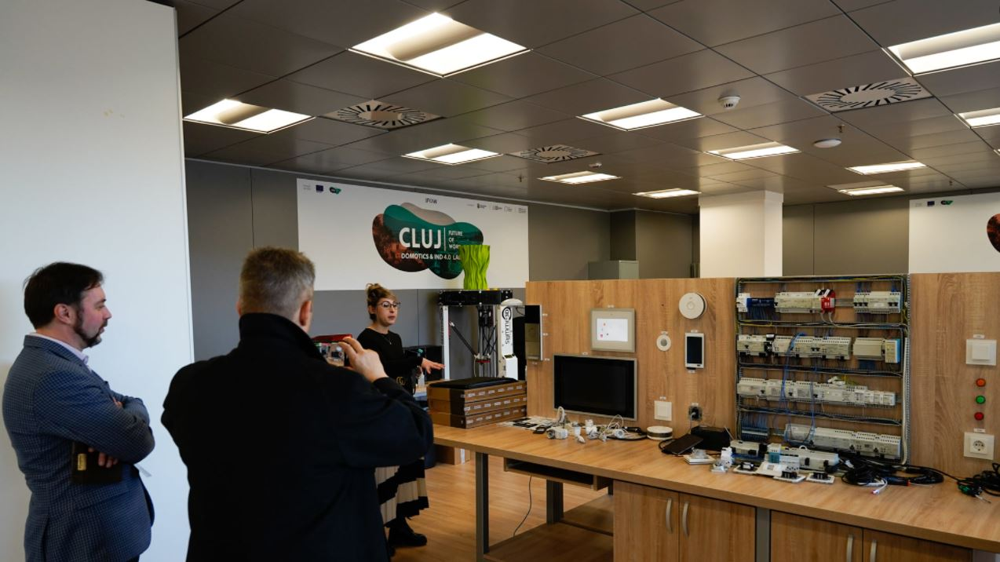
CIOT people are eager to know how things work —
and inspired to make them work better. Our “mind
and hand” philosophy spurs real-world engagement,
and thanks to CIOT’s entrepreneurial culture, Greater
Cluj’s innovation ecosystem brims with
companies spun out from CIOT. We also embrace
collaborations with industry and government, as we
seek compelling problems where CIOT innovation can
make an impact.